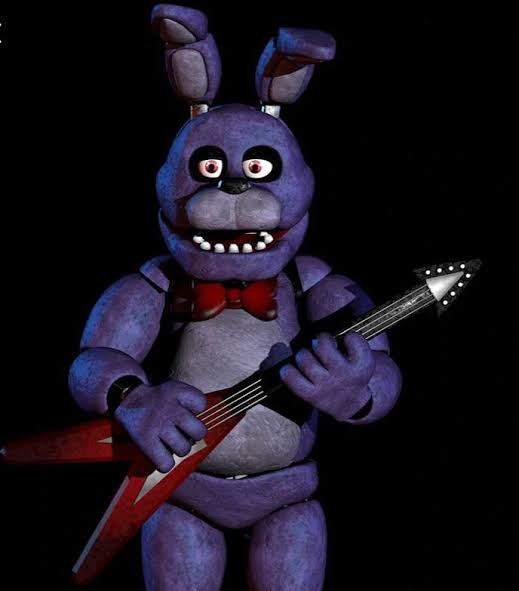
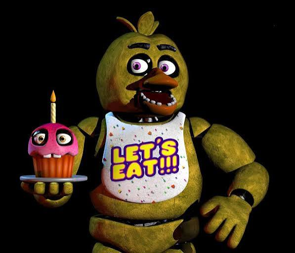
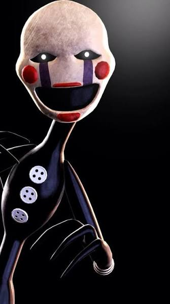

Five Nights at Freddy's es una saga que, desde su lanzamiento en 2014, fue sumando cada vez más personajes a
su universo. A través de sus videojuegos, libros y películas aparecieron nuevos animatrónicos y personajes
humanos, haciendo que la cantidad creciera con el paso de los años. En 2023 se publicó una enciclopedia
oficial que reúne información sobre más de 150 animatrónicos, aunque actualmente no existe una cifra exacta
que incluya a todos los personajes de la franquicia.
En esta sección elegimos algunos de los personajes más conocidos e importantes de la saga. Empezamos con
Freddy Fazbear, Bonnie, Chica, Foxy y Puppet, que son algunas de las caras más reconocidas de los primeros
juegos. También incluimos grupos como los Toys, Withereds, Nightmares, Funtimes y Glamrocks, para mostrar
cómo fueron cambiando los animatrónicos con el tiempo.
Pero ¿por qué existen tantas versiones de un mismo personaje? Esto se debe a que, a medida que avanza la
historia, los animatrónicos fueron cambiando de diseño, fueron reemplazados por modelos nuevos o aparecieron
en diferentes establecimientos. Por ejemplo, los Withereds son versiones deterioradas/destruidas de los animatrónicos
originales, los Toys son modelos más modernos y los Glamrocks pertenecen a una generación completamente
diferente. Cada versión tiene sus propias características y está relacionada con una parte distinta de la
historia de FNAF.
freddy fazbear
Freddy Fazbear es un oso animatrónico creado por Fazbear Entertainment, Inc., diseñado para actuar como
el vocalista principal de la banda de animatrónicos, así como la icónica mascota de Freddy Fazbear's
Pizza, actuando desde el Escenario junto a Bonnie y Chica. Al ser el personaje insignia de la empresa,
Freddy es también su mascota y quien le da el nombre a esta. Debuta en Five Nights at Freddy's, donde es
uno de los antagonistas principales.
Freddy Fazbear regresa como uno de los antagonistas principales en Five Nights at Freddy's 2, con un
nuevo aspecto más deteriorado que le valió el apodo de Withered Freddy .
Tras ser sustituido por Toy Freddy como el vocalista principal, quedó relegado a la sala de
Repuestos/Servicios junto al resto de animatrónicos Originales, donde ahora solo sirve como fuente de
repuestos para su sustituto.
bonnie

Bonnie the Rabbit es un conejo animatrónico creado por Fazbear
Entertainment, Inc., diseñado para actuar como el guitarrista de la banda de animatrónicos de Freddy
Fazbear's Pizza, actuando desde el Escenario junto a Freddy Fazbear y Chica.
Debuta en Five Nights at Freddy's, donde es uno de los antagonistas principales.
Bonnie regresa como uno de los antagonistas principales en Five Nights at Freddy's 2, con un nuevo
aspecto más deteriorado que le valió el apodo de Withered Bonnie.Tras ser sustituido por Toy Bonnie como
el guitarrista, quedó relegado a la sala de Repuestos/Servicios junto
al resto de animatrónicos Originales, donde ahora solo sirve como fuente de repuestos para su sustituto.
chica

Chica the Chicken es una gallina animatrónica creada por Fazbear
Entertainment, Inc., diseñada para actuar como la corista en la banda de animatrónicos de Freddy
Fazbear's Pizza, actuando desde el Escenario junto a Freddy Fazbear y Bonnie. Chica suele ir acompañada
por Mr. Cupcake . (Magdalena/Pastelito), un pequeño animatrónico con forma de pastelito
que descansa sobre un plato que esta lleva consigo.
Debuta en Five Nights at Freddy's, donde es una de los antagonistas principales.
foxy
Foxy es un zorro animatrónico creado por Fazbear Entertainment, Inc., diseñado para ofrecer espectáculos
con temática pirata en Freddy Fazbear's Pizza, actuando desde un escenario separado de la banda
principal: Cala Pirata. Sin embargo, para cuando tienen lugar los acontecimientos del juego, Foxy está
fuera de servicio.
Debuta en Five Nights at Freddy's, donde es uno de los antagonistas principales.
puppet

Puppet, también conocido como Marionette, es una marioneta animatrónica creada por Fazbear
Entertainment, Inc., diseñado para gestionar el Rincón de Premios en el local de 1987 de Freddy
Fazbear's Pizza. Sin embargo, tal como se revela en el minijuego de Security Puppet, su función original
era servir como medida de seguridad para evitar que los niños salieran de la pizzería en el local de
1983.
Debuta en Five Nights at Freddy's 2, donde es uno de los antagonistas principales